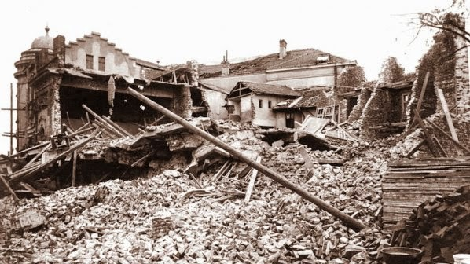
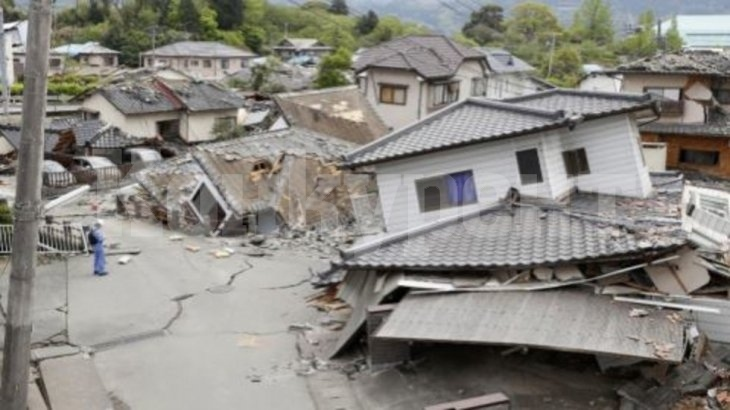

Това е едно от най-разрушителните земетресения в българия - 7.3 степен по скалата на Рихтер. През 4 март 1977 година сеизмичната вълна тръгва двайсетина секунди по-рано от епицентъра в румънския окръг Вранча, намиращ се в областта Молдова в източните Карпати и безшумно, но коварно раздвижва земята под Свищов. И до ден днешен се спори за броят на загиналите. Според някои те са 114 души, според други – 120.

30 септември 1858 г.10 km югозападно от София е регистрирано земетресение с магнитуд от 5.2 степен по скалата на Рихтер. Жертви-20/25 души.